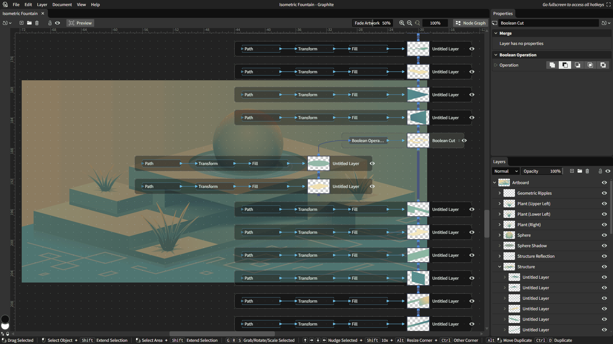
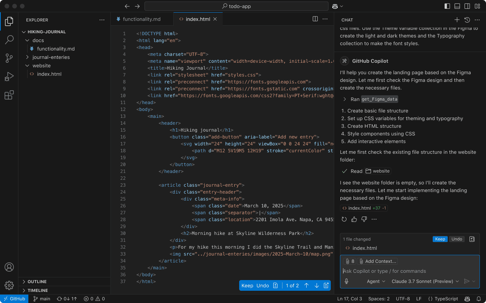
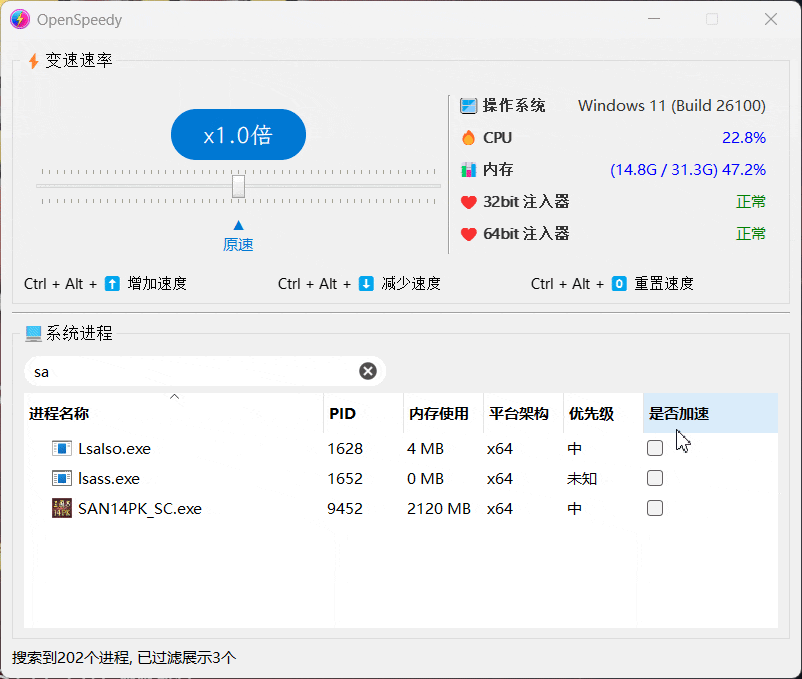
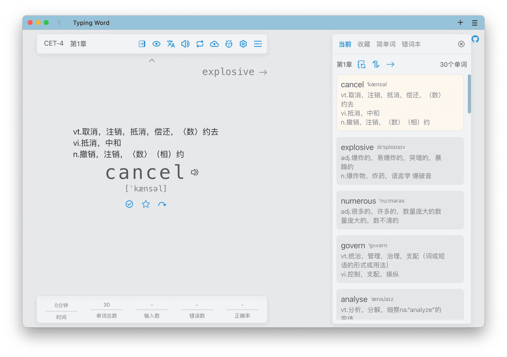

长期以来，2D 设计领域似乎已是 Adobe 与 Figma 的天下，层叠的图层、熟悉的工具栏，一切都显得那么顺理成章，却也让不少设计师在创意的边界上感到了些许乏力。当我们以为设计工具的革新只能是小修小补时，开源社区再次扮演了“破局者”的角色。
开源的节点式 2D 图形编辑工具 Graphite，它引入了程序化、非破坏性的节点式编辑流程，为矢量设计带来了前所未有的灵活性和想象空间，在开源社区一经亮相便迅速走红，收获了无数设计师和开发者的关注（周增长 1k+ Star）。与此同时，视频剪辑领域也迎来了基于 Web 的新生力量 OpenCut。极客精神的火花则点燃了 QEMUAppleSilicon 项目，让在非苹果设备上运行 iPhone 系统成为可能。
此外，沉浸式语言学习助手 illa-helper 和极简的打字背单词网站 typing-word 都是学习语言的开源利器。前者通过营造沉浸式语言环境，帮助用户高效提升“输入”能力。后者则利用肌肉记忆强化单词“输出”，两者相辅相成，共同构建了一套完整高效的英语学习闭环。
· 本文目录
· 1\. 热门开源项目
· 1.1 节点式 2D 图形编辑工具：Graphite
· 1.2 在非苹果设备上运行 iPhone：QEMUAppleSilicon
· 1.3 沉浸式语言学习助手：illa-helper
· 1.4 GitHub Copilot Chat 插件：vscode-copilot-chat
· 2\. HelloGitHub 热评
· 2.1 开箱即用的游戏变速器：OpenSpeedy
· 2.2 极简的打字背单词网站：typing-word
· 3\. 结尾
1. 热门开源项目
1.1 节点式 2D 图形编辑工具：Graphite

主语言：Rust，Star：15k，周增长：1.2k
这是一款开源免费的 2D 矢量与位图（raster）编辑器，融入了现代节点式、非破坏性的流程创作工作流。它不仅保留了传统图层编辑功能，让用户可以在熟悉的界面中轻松上手，还通过节点式图像处理，将复杂的图形制作变得直观易用，所有操作均支持随时回溯与灵活调整。
GitHub 地址→github.com/GraphiteEditor/Graphite
1.2 在非苹果设备上运行 iPhone：QEMUAppleSilicon
主语言：C，Star：2.4k，周增长：200
这是一款基于 QEMU 的 Apple 芯片设备模拟器，目前仅支持运行 iPhone 11（iOS 14.0 beta 5）。它允许用户在非苹果硬件（如任天堂 Switch）上运行和测试 iOS 软件，无需依赖真实的苹果设备。该项目目前主要作为技术探索和可行性验证，尚不具备广泛的实用价值。
GitHub 地址→github.com/ChefKissInc/QEMUAppleSilicon
1.3 沉浸式语言学习助手：illa-helper
主语言：TypeScript，Star 1.3k，周增长：1.1k
该项目将语言学习融入日常的网页浏览中，让学习变得更加自然和高效。它基于“可理解输入”理论，通过智能翻译和发音学习功能，帮助用户在阅读过程中潜移默化地提升语言能力。
GitHub 地址→github.com/xiao-zaiyi/illa-helper
1.4 GitHub Copilot Chat 插件：vscode-copilot-chat

主语言：TypeScript，Star 960，周增长：900
该项目是微软官方为 VSCode 打造的 GitHub Copilot Chat 开源插件，提供基于 AI 的对话式编程助手功能。开发者可以在 VSCode 内通过自然语言与 Copilot 交互，支持智能代码建议、对话式编程和自动化代码编辑等功能。
GitHub 地址→github.com/microsoft/vscode-copilot-chat
2. HelloGitHub 热评
在此章节中，我们将为大家介绍本周 HelloGitHub 网站上的热门开源项目，我们不仅希望您能从中收获开源神器和编程知识，更渴望“听”到您的声音。欢迎您与我们分享使用这些开源项目的亲身体验和评价，用最真实反馈为开源项目的作者注入动力。
号外号外！本周 HelloGitHub 社区迎来了首位满级（Lv.6）用户——「ewiro」！
2.1 开箱即用的游戏变速器：OpenSpeedy

主语言：C++
这是一款完全免费、开源的 Windows 游戏加速工具。它通过 Hook 系统时间函数，实现对游戏速度的灵活调节，并提供简单易用的界面，兼容多种单机游戏。请勿用于网络游戏，以免导致账号被封！
项目详情→hellogithub.com/repository/game1024/OpenSpeedy
2.2 极简的打字背单词网站：typing-word

主语言：Vue
这是一款基于网页的背单词软件，帮助用户通过键盘输入来记忆单词。它界面简洁、交互流畅，支持单词发音、错误统计和生词本等功能。
项目详情→hellogithub.com/repository/zyronon/typing-word
3. 结尾
以上就是本期「GitHub 热点速览」的全部内容，希望这些开源项目能激发你的兴趣，帮助你找到下一个想要尝试的工具！如果你也发现了好玩、有趣的 GitHub 开源项目想要分享，欢迎来 HelloGitHub 与我们交流心得、讨论使用体验。
往期回顾
· 一周 Star 破万的开源项目
· 3 个超火的开源项目